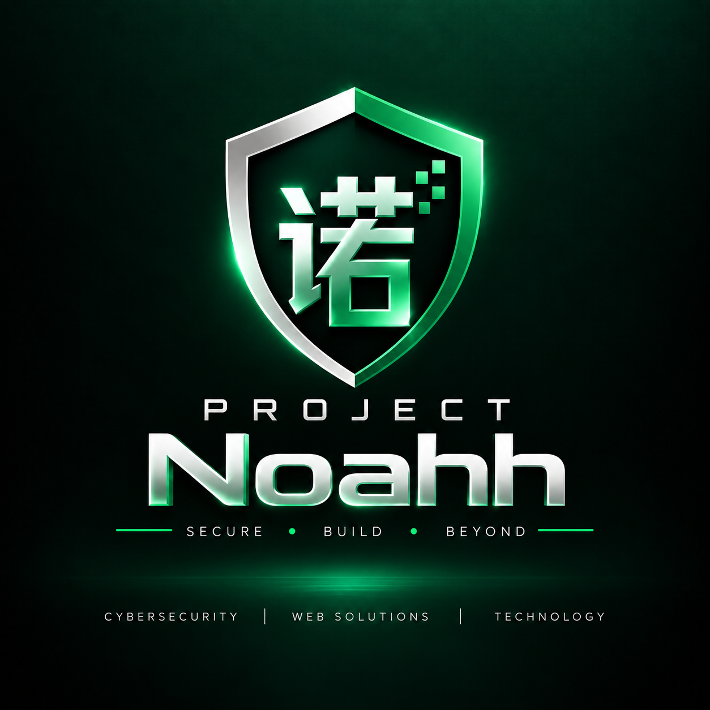

Vulnerability Assessment
Identifying security weaknesses, misconfigurations and potential attack surfaces across applications and systems.
→CYBERSECURITY / TECHNOLOGY / DIGITAL
PROJECT Noahh is a cybersecurity and technology startup focused on security research, vulnerability assessment, penetration testing, software development, reverse engineering and emerging technologies.

01 / ABOUT NOAHH
Technology should not only work. It should be understood, tested and built with security in mind.
PROJECT Noahh is a cybersecurity and technology startup focused on understanding how systems, applications, networks and digital technologies behave in the real world.
Our work brings together cybersecurity, security research, software development, reverse engineering and technology exploration.
We approach technology through practical experimentation, continuous learning and responsible security testing.
Learn more about Noahh →02 / WHAT WE DO
Identifying security weaknesses, misconfigurations and potential attack surfaces across applications and systems.
→Practical security testing of web applications, networks and systems to identify and validate security vulnerabilities.
→Exploring vulnerabilities, attack techniques, defensive technologies and emerging security concepts through controlled research.
→Analysing binaries, applications and software behaviour to understand how systems work at a deeper technical level.
→Building practical websites, applications and software solutions with security and reliability considered throughout development.
→Exploring software-defined radio, RF systems, digital signals, communications technology and experimental radio projects.
→Security testing and penetration testing are performed only with explicit authorization from the system owner or an authorized representative.
03 / TECHNOLOGY STACK
A selection of tools, platforms and technologies used across cybersecurity, reverse engineering, software development and radio technology.
Security testing, network analysis, vulnerability assessment and defensive security tooling.
Analysing binaries, applications and compiled software to understand program behaviour and implementation.
Exploring radio communications, RF signals, digital modulation, signal processing and software-defined radio.
Understanding network communication, traffic analysis, protocols, infrastructure and security monitoring.
Building software, web applications and technical projects with a focus on practical implementation.
Experimenting with embedded systems, microcontrollers, wireless modules and connected devices.
04 / THE NOAHH METHOD
Understand the environment, identify technologies and map potential attack surfaces or technical challenges.
Investigate behaviour, analyse vulnerabilities, examine systems and understand the underlying technology.
Turn technical findings into practical improvements, stronger systems and better engineering decisions.
05 / PROJECTS & RESEARCH
A practical environment for experimenting with cybersecurity concepts, vulnerability assessment, penetration testing and defensive security techniques.
RESEARCHExploring software-defined radio, digital signals, aircraft tracking, signal analysis and radio communication technologies.
EXPERIMENTALStudying compiled software, binaries and applications using reverse engineering and static analysis techniques.
RESEARCHBuilding practical applications and web technologies while considering security, reliability and maintainability.
DEVELOPMENT06 / PEOPLE BEHIND NOAHH
CO-FOUNDER · CERTIFIED SOC ANALYST
Cybersecurity professional and Certified SOC Analyst focused on penetration testing, vulnerability assessment, web application security, reverse engineering, digital forensics and security research.
As co-founder of PROJECT Noahh, Anay focuses on the cybersecurity direction, technical research and security-focused development of the startup.
CO-FOUNDER · SOFTWARE ENGINEER
Software engineer focused on software development, cybersecurity and modern application technologies.
Ciya works across Python, Django, PHP, Flutter and modern web technologies while contributing to application development and security-focused solutions.
07 / CONTACT
Let's build, research and explore what comes next. For cybersecurity, software development, technology projects, research or collaboration, get in touch with PROJECT Noahh.
projectnoahh.md@gmail.comHAVE AN IDEA?